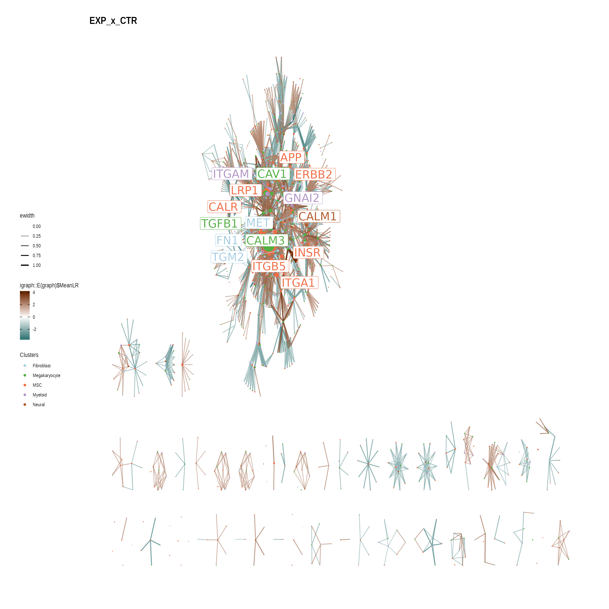

CrossTalkeR cookbook
James S. Nagai
Institute for Computational Genomics, Faculty of Medicine, RWTH Aachen University, Aachen, 52074 GermanyNils B. Leimkühler
Oncode Institute, Erasmus Medical Center, Rotterdam, 3015GD, the NetherlandsMichael T. Schaub
Department of Computer Science, RWTH Aachen University, Aachen, GermanyRebekka K. Schneider
Department of Hematology, Erasmus Medical Center, Rotterdam, 3015GD, the NetherlandsDepartment of Cell Biology, Institute for Biomedical Engineering, Faculty of Medicine, RWTH Aachen University, Aachen, 52074 GermanyOncode Institute, Erasmus Medical Center, Rotterdam, 3015GD, the NetherlandsIvan G. Costa
Institute for Computational Genomics, Faculty of Medicine, RWTH Aachen University, Aachen, 52074 GermanySource:
../Helene/Helene/Downstream/src/vignettes/CrossTalkeR.Rmd
CrossTalkeR.RmdVersion Info
## Warning: replacing previous import 'dplyr::union' by 'igraph::union' when
## loading 'CrossTalkeR'## Warning: replacing previous import 'dplyr::as_data_frame' by
## 'igraph::as_data_frame' when loading 'CrossTalkeR'## Warning: replacing previous import 'dplyr::groups' by 'igraph::groups' when
## loading 'CrossTalkeR'## Warning: replacing previous import 'clusterProfiler::simplify' by
## 'igraph::simplify' when loading 'CrossTalkeR'## Warning: replacing previous import 'igraph::as_data_frame' by
## 'tibble::as_data_frame' when loading 'CrossTalkeR'
suppressPackageStartupMessages({require(igraph)})
suppressPackageStartupMessages({require(ggraph)})
suppressPackageStartupMessages({require(ggplot2)})R version: R version 4.0.4 (2021-02-15)
Package version: 1.2.0
Generate Report Example
paths <- c('CTR' = system.file("extdata",
"ctr_nils_bm_human.csv",
package = "CrossTalkeR"),
'EXP' = system.file("extdata",
"exp_nils_bm_human.csv",
package = "CrossTalkeR"))
genes <- c('TGFB1')
output = system.file("extdata", package = "CrossTalkeR")
data <- generate_report(paths,
genes,
out_path=paste0(output,'/'),
threshold=0,
out_file = 'vignettes_example.html',
output_fmt = "html_document",
report = FALSE)Individual Visualization
CCI
plot_cci(graph = data@graphs$CTR,
colors = data@colors,
plt_name = 'Example 1',
coords = data@coords[V(data@graphs$CTR)$name,],
emax = NULL,
leg = FALSE,
low = 0,
high = 0,
ignore_alpha = FALSE,
log = FALSE,
efactor = 8,
vfactor = 12) ## GCI
## GCI
plot_ggi(graph = data@graphs_ggi$EXP_x_CTR,
color = data@colors,name="EXP_x_CTR")
Sankey plot
plot_sankey(lrobj_tbl = data@tables$EXP_x_CTR,
target = c("TGFB1"),
ligand_cluster = NULL,
receptor_cluster = NULL,
plt_name = "TGFB1")
Session information
## R version 4.0.4 (2021-02-15)
## Platform: x86_64-pc-linux-gnu (64-bit)
## Running under: Linux Mint 20
##
## Matrix products: default
## BLAS: /usr/lib/x86_64-linux-gnu/blas/libblas.so.3.9.0
## LAPACK: /usr/lib/x86_64-linux-gnu/lapack/liblapack.so.3.9.0
##
## locale:
## [1] LC_CTYPE=en_US.UTF-8 LC_NUMERIC=C
## [3] LC_TIME=en_US.UTF-8 LC_COLLATE=en_US.UTF-8
## [5] LC_MONETARY=de_DE.UTF-8 LC_MESSAGES=en_US.UTF-8
## [7] LC_PAPER=de_DE.UTF-8 LC_NAME=C
## [9] LC_ADDRESS=C LC_TELEPHONE=C
## [11] LC_MEASUREMENT=de_DE.UTF-8 LC_IDENTIFICATION=C
##
## attached base packages:
## [1] stats graphics grDevices utils datasets methods base
##
## other attached packages:
## [1] ggraph_2.0.5 ggplot2_3.3.3 igraph_1.2.6 CrossTalkeR_1.2.0
##
## loaded via a namespace (and not attached):
## [1] fs_1.5.0 sf_0.9-8 enrichplot_1.10.2
## [4] gsw_1.0-5 bit64_4.0.5 RColorBrewer_1.1-2
## [7] rprojroot_2.0.2 tools_4.0.4 bslib_0.2.4
## [10] utf8_1.2.1 R6_2.5.0 KernSmooth_2.23-18
## [13] DBI_1.1.1 BiocGenerics_0.36.0 colorspace_2.0-0
## [16] withr_2.4.1 tidyselect_1.1.0 gridExtra_2.3
## [19] bit_4.0.4 compiler_4.0.4 textshaping_0.3.3
## [22] Biobase_2.50.0 scatterpie_0.1.5 desc_1.3.0
## [25] labeling_0.4.2 colorBlindness_0.1.6 shadowtext_0.0.7
## [28] sass_0.3.1 scales_1.1.1 classInt_0.4-3
## [31] proxy_0.4-25 pkgdown_1.6.1.9001 systemfonts_1.0.1
## [34] stringr_1.4.0 digest_0.6.27 oce_1.3-0
## [37] rmarkdown_2.7 DOSE_3.16.0 pkgconfig_2.0.3
## [40] htmltools_0.5.1.1 highr_0.8 fastmap_1.1.0
## [43] rlang_0.4.10 RSQLite_2.2.5 gridGraphics_0.5-1
## [46] jquerylib_0.1.3 generics_0.1.0 farver_2.1.0
## [49] jsonlite_1.7.2 BiocParallel_1.24.1 GOSemSim_2.16.1
## [52] dplyr_1.0.5 magrittr_2.0.1 GO.db_3.12.1
## [55] Matrix_1.3-2 Rcpp_1.0.6 munsell_0.5.0
## [58] S4Vectors_0.28.1 fansi_0.4.2 viridis_0.5.1
## [61] lifecycle_1.0.0 stringi_1.5.3 yaml_2.2.1
## [64] ggalluvial_0.12.3 MASS_7.3-53.1 org.Hs.eg.db_3.12.0
## [67] plyr_1.8.6 qvalue_2.22.0 grid_4.0.4
## [70] blob_1.2.1 parallel_4.0.4 ggrepel_0.9.1
## [73] DO.db_2.9 crayon_1.4.1 lattice_0.20-41
## [76] graphlayouts_0.7.1 cowplot_1.1.1 splines_4.0.4
## [79] knitr_1.31 pillar_1.5.1 fgsea_1.16.0
## [82] reshape2_1.4.4 stats4_4.0.4 fastmatch_1.1-0
## [85] glue_1.4.2 evaluate_0.14 downloader_0.4
## [88] BiocManager_1.30.10 data.table_1.14.0 vctrs_0.3.6
## [91] tweenr_1.0.2 testthat_3.0.2 gtable_0.3.0
## [94] purrr_0.3.4 polyclip_1.10-0 tidyr_1.1.3
## [97] cachem_1.0.4 xfun_0.22 ggforce_0.3.3
## [100] tidygraph_1.2.0 e1071_1.7-6 class_7.3-18
## [103] ragg_1.1.2 viridisLite_0.3.0 tibble_3.1.0
## [106] rvcheck_0.1.8 clusterProfiler_3.18.1 AnnotationDbi_1.52.0
## [109] memoise_2.0.0 IRanges_2.24.1 units_0.7-1
## [112] ellipsis_0.3.1